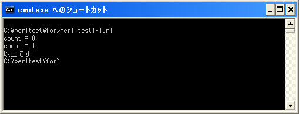

while文
繰り返し処理を行う方法として「while」文について確認します。while文は条件式が真の間、ブロック内の処理を繰り返し実行します。まずは書式から確認します。
while (条件式){
実行する処理1;
実行する処理2;
}
条件式の箇所には「x == 10」や「y > 15」など関係演算子を使った条件式を記述します。この条件が真(true)となる時に「{」から「}」までのブロック内に記述された文が実行されます。
他のプログラムミング言語では、実行される文が1つの場合はブロック無しで記述できる言語もありますが、Perlでは必ず「{」と「}」で囲ってブロックを記述する必要があります。
実際のプログラム例としては次のようになります。
my $count;
$count = 0;
while ($count < 2){
print "count = $count ¥n";
$count ++;
}
print "以上です";
この例を元にwhile文がどのように実行されるのかを確認していきます。
まずwhile文が最初に実行される時点で条件式が一度評価されます。もし条件式が偽(false)だった場合はwhile文は終了して次の処理へ進みます。今回の場合は変数「$count」に格納されている値が2よりも小さいかどうかなので、条件式は真(true)となります。真の場合にはブロック内に記述された処理を順に1回実行します。
1)変数「$count」を初期化し、0を格納 2)while文の条件式を評価 3)条件式が真のため、ブロック内を実行 4)「count = 0」を出力 5)変数「$count」に格納されている値を1だけ増加し1にする
ブロック内の処理を一度実行したら、改めてwhile文の条件式を評価します。変数「$count」の値は1になっていますので、条件式は引き続き真です。その為、再度ブロック内の処理を実行します。
1)while文の条件式を評価 2)条件式が真のため、ブロック内を実行 3)「count = 1」を出力 4)変数「$count」に格納されている値を1だけ増加し2にする
またwhile文の条件式を評価します。変数「$count」の値は2になっていますので、条件式は偽となります。その為、この時点でwhile文は終了し、while文の次へ進みます。
1)while文の条件式を評価 2)条件式が偽のため、while文は終了 3)「以上です」を出力
このようにwhile文は条件式が真の間は何度でもブロック内の処理を繰り返します。その為、ブロック内で条件式が変化するような処理(今回は比較している変数の値を増加)を行わないと、いつまでの条件式の評価は同じになってしまいますので無限にループしてしまうことになります。また条件式がいきない偽になる場合はブロック内は一度も実行されません。
while文は決められた回数だけ繰り返す処理よりも、ブロック内で処理される内容がある条件を満たすまで無限に繰り返すといった処理によく使われます。例えばファイルを最初から最後まで読み込むとか、パスワードが一致するするまで入力を行ってもらうなどの用途に使います。
サンプルプログラム
では簡単なプログラムで確認して見ます。
use strict;
use warnings;
use utf8;
binmode STDIN, ':encoding(cp932)';
binmode STDOUT, ':encoding(cp932)';
binmode STDERR, ':encoding(cp932)';
my $count;
$count = 0;
while ($count < 2){
print "count = $count ¥n";
$count ++;
}
print "以上です";
上記を「test1-1.pl」の名前で保存します(文字コードはUTF-8です)。そしてコマンドプロンプトを起動し、プログラムを保存したディレクトリに移動してから次のように実行して下さい。

( Written by Tatsuo Ikura )

著者 / TATSUO IKURA
初心者～中級者の方を対象としたプログラミング方法や開発環境の構築の解説を行うサイトの運営を行っています。